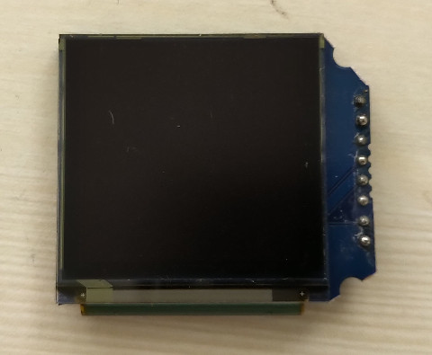
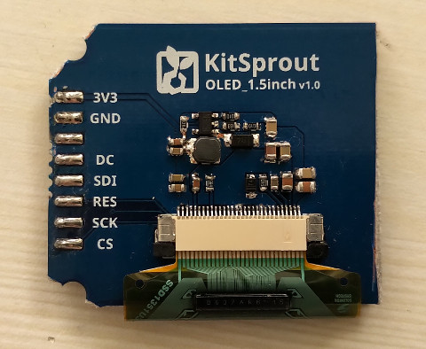
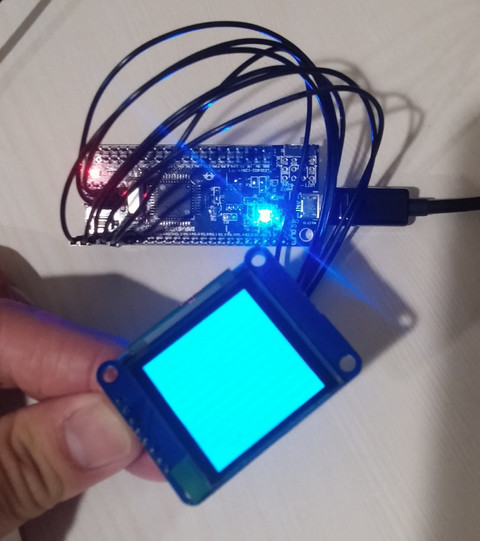

屏


#include "stc15w4k56s4.h"
#define DC P54
#define SDI P43
#define RST P42
#define SCK P41
#define CS P40
enum {
SSD1351_CMD_SETCOLUMNADDRESS = 0x15,
SSD1351_CMD_SETROWADDRESS = 0x75,
SSD1351_CMD_WRITERAM = 0x5c,
SSD1351_CMD_READRAM = 0x5d,
SSD1351_CMD_COLORDEPTH = 0xa0,
SSD1351_CMD_SETDISPLAYSTARTLINE = 0xa1,
SSD1351_CMD_SETDISPLAYOFFSET = 0xa2,
SSD1351_CMD_SETDISPLAYMODE_ALLOFF = 0xa4,
SSD1351_CMD_SETDISPLAYMODE_ALLON = 0xa5,
SSD1351_CMD_SETDISPLAYMODE_RESET = 0xa6,
SSD1351_CMD_SETDISPLAYMODE_INVERT = 0xa7,
SSD1351_CMD_FUNCTIONSELECTION = 0xab,
SSD1351_CMD_SLEEPMODE_DISPLAYOFF = 0xae,
SSD1351_CMD_SLEEPMODE_DISPLAYON = 0xaf,
SSD1351_CMD_SETPHASELENGTH = 0xb1,
SSD1351_CMD_ENHANCEDDRIVINGSCHEME = 0xb2,
SSD1351_CMD_SETFRONTCLOCKDIV = 0xb3,
SSD1351_CMD_SETSEGMENTLOWVOLTAGE = 0xb4,
SSD1351_CMD_SETGPIO = 0xb5,
SSD1351_CMD_SETSECONDPRECHARGEPERIOD = 0xb6,
SSD1351_CMD_GRAYSCALELOOKUP = 0xb8,
SSD1351_CMD_LINEARLUT = 0xb9,
SSD1351_CMD_SETPRECHARGEVOLTAGE = 0xbb,
SSD1351_CMD_SETVCOMHVOLTAGE = 0xbe,
SSD1351_CMD_SETCONTRAST = 0xc1,
SSD1351_CMD_MASTERCONTRAST = 0xc7,
SSD1351_CMD_SETMUXRRATIO = 0xca,
SSD1351_CMD_NOP3 = 0xd1,
SSD1351_CMD_NOP4 = 0xe3,
SSD1351_CMD_SETCOMMANDLOCK = 0xfd,
SSD1351_CMD_HORIZONTALSCROLL = 0x96,
SSD1351_CMD_STOPMOVING = 0x9e,
SSD1351_CMD_STARTMOVING = 0x9f
};
void delayms(unsigned int ms)
{
unsigned int cnt = 0;
while (ms--) {
for (cnt = 0; cnt < 1000; cnt++) {
}
}
}
void CMD(char cmd)
{
int i = 0;
CS = 0;
DC = 0;
for (i = 0; i < 8; i++) {
SCK = 0;
if ((cmd & 0x80) == 0x80) {
SDI = 1;
}
else {
SDI = 0;
}
cmd <<= 1;
SCK = 1;
}
CS = 1;
}
void DATA(char dat)
{
int i = 0;
CS = 0;
DC = 1;
for (i = 0; i < 8; i++) {
SCK = 0;
if ((dat & 0x80) == 0x80) {
SDI = 1;
}
else {
SDI = 0;
}
dat <<= 1;
SCK = 1;
}
CS = 1;
}
void cursor(unsigned char x, unsigned char y)
{
CMD(SSD1351_CMD_WRITERAM);
CMD(SSD1351_CMD_SETCOLUMNADDRESS);
DATA(x);
DATA(127);
CMD(SSD1351_CMD_SETROWADDRESS);
DATA(y);
DATA(127);
CMD(SSD1351_CMD_WRITERAM);
}
void reset(void)
{
RST = 0;
delayms(100);
RST = 1;
delayms(100);
}
void init(void)
{
CMD(SSD1351_CMD_SETCOMMANDLOCK);
DATA(0x12);
CMD(SSD1351_CMD_SETCOMMANDLOCK);
DATA(0xb1);
CMD(SSD1351_CMD_SLEEPMODE_DISPLAYOFF);
CMD(SSD1351_CMD_SETFRONTCLOCKDIV);
DATA(0xf1);
CMD(SSD1351_CMD_SETMUXRRATIO);
DATA(0x7f);
CMD(SSD1351_CMD_COLORDEPTH);
DATA(0x74);
CMD(SSD1351_CMD_SETCOLUMNADDRESS);
DATA(0x00);
DATA(0x7f);
CMD(SSD1351_CMD_SETROWADDRESS);
DATA(0x00);
DATA(0x7f);
CMD(SSD1351_CMD_SETDISPLAYSTARTLINE);
DATA(0x00);
CMD(SSD1351_CMD_SETDISPLAYOFFSET);
DATA(0x00);
CMD(SSD1351_CMD_SETGPIO);
DATA(0x00);
CMD(SSD1351_CMD_FUNCTIONSELECTION);
DATA(0x01);
CMD(SSD1351_CMD_SETPHASELENGTH);
DATA(0x32);
CMD(SSD1351_CMD_SETSEGMENTLOWVOLTAGE);
DATA(0xa0);
DATA(0xb5);
DATA(0x55);
CMD(SSD1351_CMD_SETPRECHARGEVOLTAGE);
DATA(0x17);
CMD(SSD1351_CMD_SETVCOMHVOLTAGE);
DATA(0x05);
CMD(SSD1351_CMD_SETCONTRAST);
DATA(0xc8);
DATA(0x80);
DATA(0xc8);
CMD(SSD1351_CMD_MASTERCONTRAST);
DATA(0x0f);
CMD(SSD1351_CMD_SETSECONDPRECHARGEPERIOD);
DATA(0x01);
CMD(SSD1351_CMD_SETDISPLAYMODE_RESET);
CMD(SSD1351_CMD_GRAYSCALELOOKUP);
DATA(0x05);
DATA(0x06);
DATA(0x07);
DATA(0x08);
DATA(0x09);
DATA(0x0a);
DATA(0x0b);
DATA(0x0c);
DATA(0x0d);
DATA(0x0e);
DATA(0x0f);
DATA(0x10);
DATA(0x11);
DATA(0x12);
DATA(0x13);
DATA(0x14);
DATA(0x15);
DATA(0x16);
DATA(0x18);
DATA(0x1a);
DATA(0x1b);
DATA(0x1c);
DATA(0x1d);
DATA(0x1f);
DATA(0x21);
DATA(0x23);
DATA(0x25);
DATA(0x27);
DATA(0x2a);
DATA(0x2d);
DATA(0x30);
DATA(0x33);
DATA(0x36);
DATA(0x39);
DATA(0x3c);
DATA(0x3f);
DATA(0x42);
DATA(0x45);
DATA(0x48);
DATA(0x4c);
DATA(0x50);
DATA(0x54);
DATA(0x58);
DATA(0x5c);
DATA(0x60);
DATA(0x64);
DATA(0x68);
DATA(0x6c);
DATA(0x70);
DATA(0x74);
DATA(0x78);
DATA(0x7d);
DATA(0x82);
DATA(0x87);
DATA(0x8c);
DATA(0x91);
DATA(0x96);
DATA(0x9B);
DATA(0xa0);
DATA(0xa5);
DATA(0xaa);
DATA(0xaf);
DATA(0xb4);
CMD(SSD1351_CMD_SLEEPMODE_DISPLAYON);
}
void color(void)
{
int i, j;
unsigned char r = 0x00;
unsigned char g = 0x00;
unsigned char b = 0xff;
unsigned char data1 = (r & 0xF8) | (g >> 5);
unsigned char data2 = (b >> 3) | ((g >> 2) << 5);
cursor(0, 0);
for (i = 0; i < 128; i++) {
for (j = 0; j < 128; j++) {
DATA(data1);
DATA(data2);
}
}
}
void gpio_init(void)
{
P0M0 = 0x00;
P0M1 = 0x00;
P1M0 = 0x00;
P1M1 = 0x00;
P2M0 = 0x00;
P2M1 = 0x00;
P3M0 = 0x00;
P3M1 = 0x00;
P4M0 = 0x00;
P4M1 = 0x00;
P5M0 = 0x00;
P5M1 = 0x00;
}
void main(void)
{
gpio_init();
AUXR |= 0x80;
reset();
init();
color();
while (1) {
P55 = 0;
delayms(1000);
P55 = 1;
delayms(1000);
}
}
Makefile
all: sdcc main.c packihx main.ihx > main.hex flash: sudo stcgal -p /dev/ttyO2 -P stc15 -o clock_source=external main.hex clean: rm -rf main.ihx main.lst main.mem main.rst main.lk main.map main.rel main.sym main.hex
完成
